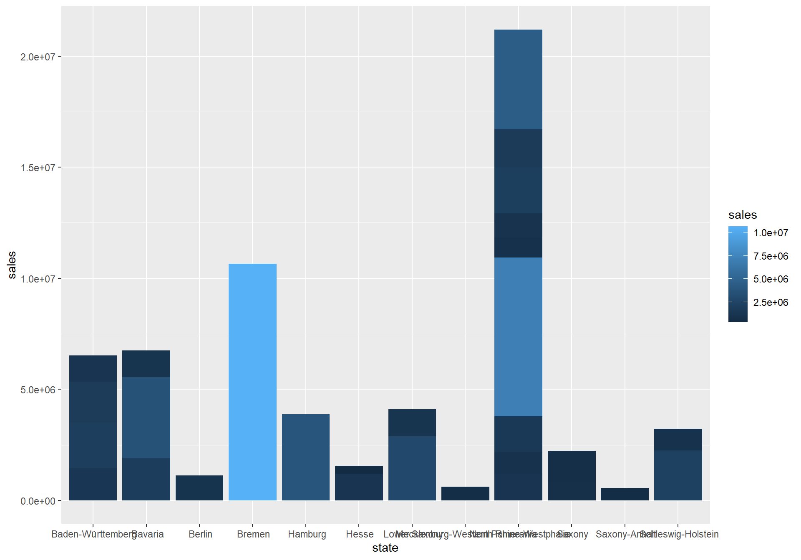
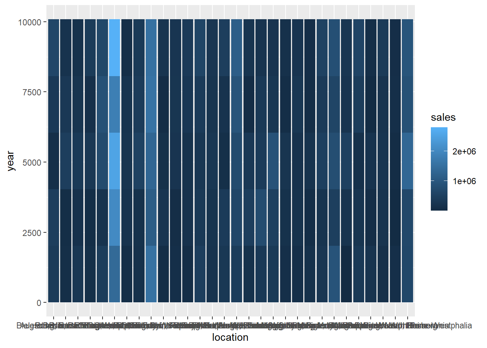
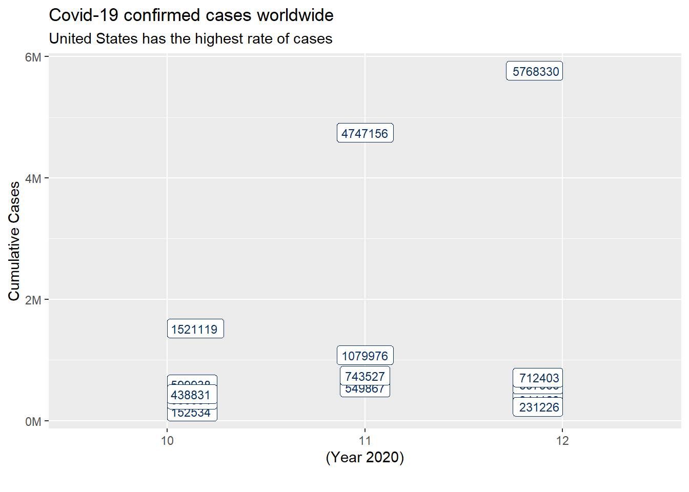
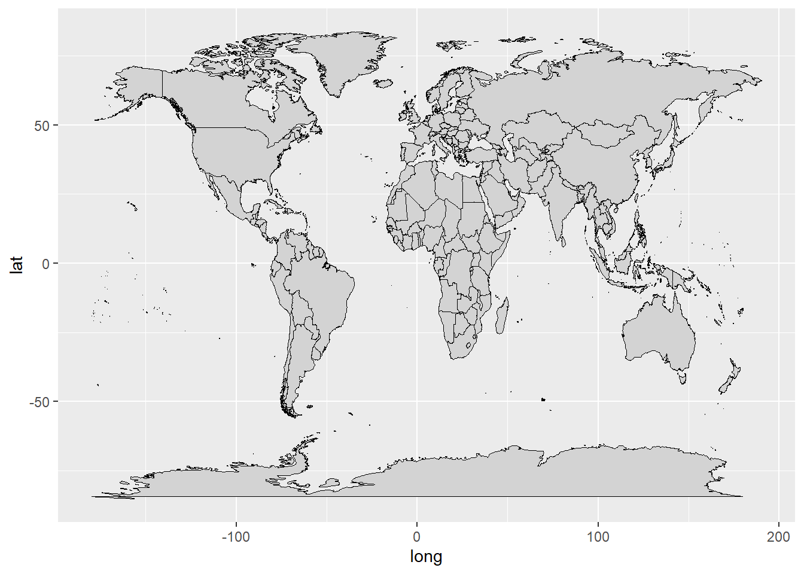
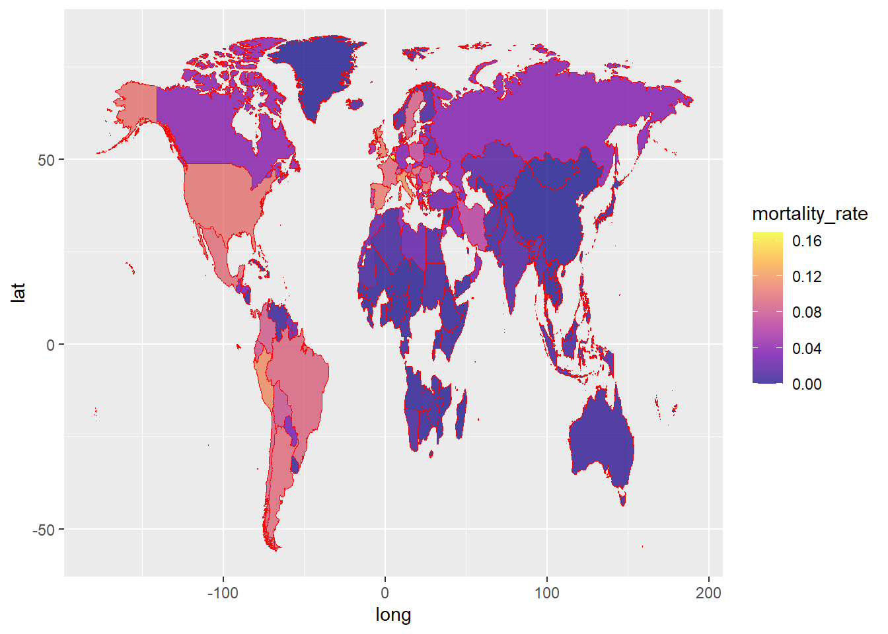

IMPORTANT: You can delete everything in here and start fresh. You might want to start by not deleting anything above this line until you know what that stuff is doing.
This is an .Rmd file. It is plain text with special features. Any time you write just like this, it will be compiled to normal text in the website. If you put a # in front of your text, it will create a top level-header.
Last compiled: 2021-01-08
library(tidyverse)
library(readxl)
library(lubridate)
library(ggplot2)bikes_tbl <- readxl:: read_excel(path = "DS_101/DS_101/00_data/01_bike_sales/01_raw_data/bikes.xlsx")
orderlines_tbl <- readxl::read_excel("DS_101/DS_101/00_data/01_bike_sales/01_raw_data/orderlines.xlsx")
bikeshops_tbl <- readxl::read_excel("DS_101/DS_101/00_data/01_bike_sales/01_raw_data/bikeshops.xlsx")bike_orderlines_joined_tbl <- orderlines_tbl %>%
left_join(bikes_tbl, by = c("product.id" = "bike.id")) %>%
left_join(bikeshops_tbl, by = c("customer.id" = "bikeshop.id"))bike_orderlines_joined_tbl %>%
select(category) %>%
filter(str_detect(category, "^Mountain")) %>%
unique()## # A tibble: 10 x 1
## category
## <chr>
## 1 Mountain - Trail - Spectral
## 2 Mountain - Trail - Neuron
## 3 Mountain - Dirt Jump - Stitched
## 4 Mountain - Enduro - Torque
## 5 Mountain - Trail - Grand Canyon
## 6 Mountain - Cross-Country - Lux
## 7 Mountain - Enduro - Strive
## 8 Mountain - Downhill - Sender
## 9 Mountain - Fat Bikes - Dude
## 10 Mountain - Cross-Country - Exceedbike_orderlines_wrangled_tbl <- bike_orderlines_joined_tbl %>%
separate(col = category,
into = c("category.1", "category.2", "category.3"),
sep = " - ") %>%
mutate(total.price = price * quantity)sales_by_loc_tbl <- bike_orderlines_wrangled_tbl %>% select(location, total.price)
sales_by_loc_tbl## # A tibble: 15,644 x 2
## location total.price
## <chr> <dbl>
## 1 Hamburg, Hamburg 3119
## 2 Hamburg, Hamburg 5359
## 3 Bremen, Bremen 2729
## 4 Bremen, Bremen 1749
## 5 Stuttgart, Baden-Württemberg 1219
## 6 Stuttgart, Baden-Württemberg 1359
## 7 Stuttgart, Baden-Württemberg 2529
## 8 Stuttgart, Baden-Württemberg 1559
## 9 Stuttgart, Baden-Württemberg 3899
## 10 Augsburg, Bavaria 6629
## # ... with 15,634 more rowssales_by_city_state_tbl <-sales_by_loc_tbl %>% separate(col=location , into=c("city","state"),sep=",",convert=T) %>% group_by(state,city) %>% summarise(sales = sum(total.price))sales_by_state_tbl <-sales_by_city_state_tbl %>% select(state , sales)
sales_by_state_tbl[order(-sales_by_state_tbl$sales),]## # A tibble: 30 x 2
## # Groups: state [12]
## state sales
## <chr> <dbl>
## 1 " Bremen" 10653499
## 2 " North Rhine-Westphalia" 7152089
## 3 " North Rhine-Westphalia" 4496391
## 4 " Hamburg" 3874756
## 5 " Bavaria" 3629885
## 6 " Lower Saxony" 2886140
## 7 " Schleswig-Holstein" 2245588
## 8 " North Rhine-Westphalia" 2060323
## 9 " Baden-Württemberg" 2035536
## 10 " Bavaria" 1911938
## # ... with 20 more rowstherfore Bremen is the highest state
sales_by_state_tbl %>% ggplot(aes(x = state, y = sales , fill = sales)) + geom_col() ### using years
sales_by_state_year_tbl <- bike_orderlines_wrangled_tbl %>% select(location, order.date, total.price) %>% mutate(year = year(order.date)) %>% group_by(location,year) %>% summarize(sales = sum(total.price))sales_by_state_year_tbl %>% ggplot(aes(x = location, y = year , fill = sales)) + geom_col()
#Data Acquistion ##Libraries
library(RSQLite)
library(dplyr)
library(httr)
library(glue)
library(jsonlite)
library(keyring)
library(rvest)
library(stringr)
library(purrr)
library(xopen)
library(stringi)
library(tibble)##TASK1_API_Get_Data
url= "https://api.coinpaprika.com/v1/coins/btc-bitcoin"
resp <- GET(url)
rawToChar(resp$content)## [1] "{\"id\":\"btc-bitcoin\",\"name\":\"Bitcoin\",\"symbol\":\"BTC\",\"rank\":1,\"is_new\":false,\"is_active\":true,\"type\":\"coin\",\"tags\":[{\"id\":\"segwit\",\"name\":\"Segwit\",\"coin_counter\":9,\"ico_counter\":0},{\"id\":\"cryptocurrency\",\"name\":\"Cryptocurrency\",\"coin_counter\":837,\"ico_counter\":39},{\"id\":\"proof-of-work\",\"name\":\"Proof Of Work\",\"coin_counter\":437,\"ico_counter\":15},{\"id\":\"payments\",\"name\":\"Payments\",\"coin_counter\":221,\"ico_counter\":39},{\"id\":\"sha256\",\"name\":\"Sha256\",\"coin_counter\":48,\"ico_counter\":1},{\"id\":\"mining\",\"name\":\"Mining\",\"coin_counter\":329,\"ico_counter\":17},{\"id\":\"lightning-network\",\"name\":\"Lightning Network\",\"coin_counter\":7,\"ico_counter\":0}],\"team\":[{\"id\":\"satoshi-nakamoto\",\"name\":\"Satoshi Nakamoto\",\"position\":\"Founder\"},{\"id\":\"wladimir-j-van-der-laan\",\"name\":\"Wladimir J. van der Laan\",\"position\":\"Blockchain Developer\"},{\"id\":\"jonas-schnelli\",\"name\":\"Jonas Schnelli\",\"position\":\"Blockchain Developer\"},{\"id\":\"marco-falke\",\"name\":\"Marco Falke\",\"position\":\"Blockchain Developer\"}],\"description\":\"Bitcoin is a cryptocurrency and worldwide payment system. It is the first decentralized digital currency, as the system works without a central bank or single administrator.\",\"message\":\"\",\"open_source\":true,\"started_at\":\"2009-01-03T00:00:00Z\",\"development_status\":\"Working product\",\"hardware_wallet\":true,\"proof_type\":\"Proof of Work\",\"org_structure\":\"Decentralized\",\"hash_algorithm\":\"SHA256\",\"links\":{\"explorer\":[\"http://blockchain.com/explorer\",\"https://blockstream.info/\",\"https://blockchair.com/bitcoin\",\"https://live.blockcypher.com/btc/\",\"https://btc.cryptoid.info/btc/\"],\"facebook\":[\"https://www.facebook.com/bitcoins/\"],\"reddit\":[\"https://www.reddit.com/r/bitcoin\"],\"source_code\":[\"https://github.com/bitcoin/bitcoin\"],\"website\":[\"https://bitcoin.org/\"],\"youtube\":[\"https://www.youtube.com/watch?v=Gc2en3nHxA4\\u0026\"]},\"links_extended\":[{\"url\":\"https://bitcoin.org/en/blog\",\"type\":\"blog\"},{\"url\":\"https://blockchair.com/bitcoin\",\"type\":\"explorer\"},{\"url\":\"http://blockchain.com/explorer\",\"type\":\"explorer\"},{\"url\":\"https://blockstream.info/\",\"type\":\"explorer\"},{\"url\":\"https://live.blockcypher.com/btc/\",\"type\":\"explorer\"},{\"url\":\"https://btc.cryptoid.info/btc/\",\"type\":\"explorer\"},{\"url\":\"https://www.facebook.com/bitcoins/\",\"type\":\"facebook\"},{\"url\":\"https://bitcointalk.org\",\"type\":\"message_board\"},{\"url\":\"https://www.reddit.com/r/bitcoin\",\"type\":\"reddit\",\"stats\":{\"subscribers\":1897324}},{\"url\":\"https://github.com/bitcoin/bitcoin\",\"type\":\"source_code\",\"stats\":{\"contributors\":937,\"stars\":47611}},{\"url\":\"https://twitter.com/bitcoincoreorg\",\"type\":\"twitter\",\"stats\":{\"followers\":102243}},{\"url\":\"https://electrum.org/#download\",\"type\":\"wallet\"},{\"url\":\"https://bitcoin.org/\",\"type\":\"website\"},{\"url\":\"https://www.youtube.com/watch?v=Gc2en3nHxA4\\u0026\",\"type\":\"youtube\"}],\"whitepaper\":{\"link\":\"https://static.coinpaprika.com/storage/cdn/whitepapers/215.pdf\",\"thumbnail\":\"https://static.coinpaprika.com/storage/cdn/whitepapers/217.jpg\"},\"first_data_at\":\"2010-07-17T00:00:00Z\",\"last_data_at\":\"2021-01-08T17:00:00Z\"}"resp %>%
.$content %>%
rawToChar() %>%
fromJSON()## $id
## [1] "btc-bitcoin"
##
## $name
## [1] "Bitcoin"
##
## $symbol
## [1] "BTC"
##
## $rank
## [1] 1
##
## $is_new
## [1] FALSE
##
## $is_active
## [1] TRUE
##
## $type
## [1] "coin"
##
## $tags
## id name coin_counter ico_counter
## 1 segwit Segwit 9 0
## 2 cryptocurrency Cryptocurrency 837 39
## 3 proof-of-work Proof Of Work 437 15
## 4 payments Payments 221 39
## 5 sha256 Sha256 48 1
## 6 mining Mining 329 17
## 7 lightning-network Lightning Network 7 0
##
## $team
## id name position
## 1 satoshi-nakamoto Satoshi Nakamoto Founder
## 2 wladimir-j-van-der-laan Wladimir J. van der Laan Blockchain Developer
## 3 jonas-schnelli Jonas Schnelli Blockchain Developer
## 4 marco-falke Marco Falke Blockchain Developer
##
## $description
## [1] "Bitcoin is a cryptocurrency and worldwide payment system. It is the first decentralized digital currency, as the system works without a central bank or single administrator."
##
## $message
## [1] ""
##
## $open_source
## [1] TRUE
##
## $started_at
## [1] "2009-01-03T00:00:00Z"
##
## $development_status
## [1] "Working product"
##
## $hardware_wallet
## [1] TRUE
##
## $proof_type
## [1] "Proof of Work"
##
## $org_structure
## [1] "Decentralized"
##
## $hash_algorithm
## [1] "SHA256"
##
## $links
## $links$explorer
## [1] "http://blockchain.com/explorer" "https://blockstream.info/"
## [3] "https://blockchair.com/bitcoin" "https://live.blockcypher.com/btc/"
## [5] "https://btc.cryptoid.info/btc/"
##
## $links$facebook
## [1] "https://www.facebook.com/bitcoins/"
##
## $links$reddit
## [1] "https://www.reddit.com/r/bitcoin"
##
## $links$source_code
## [1] "https://github.com/bitcoin/bitcoin"
##
## $links$website
## [1] "https://bitcoin.org/"
##
## $links$youtube
## [1] "https://www.youtube.com/watch?v=Gc2en3nHxA4&"
##
##
## $links_extended
## url type stats.subscribers
## 1 https://bitcoin.org/en/blog blog NA
## 2 https://blockchair.com/bitcoin explorer NA
## 3 http://blockchain.com/explorer explorer NA
## 4 https://blockstream.info/ explorer NA
## 5 https://live.blockcypher.com/btc/ explorer NA
## 6 https://btc.cryptoid.info/btc/ explorer NA
## 7 https://www.facebook.com/bitcoins/ facebook NA
## 8 https://bitcointalk.org message_board NA
## 9 https://www.reddit.com/r/bitcoin reddit 1897324
## 10 https://github.com/bitcoin/bitcoin source_code NA
## 11 https://twitter.com/bitcoincoreorg twitter NA
## 12 https://electrum.org/#download wallet NA
## 13 https://bitcoin.org/ website NA
## 14 https://www.youtube.com/watch?v=Gc2en3nHxA4& youtube NA
## stats.contributors stats.stars stats.followers
## 1 NA NA NA
## 2 NA NA NA
## 3 NA NA NA
## 4 NA NA NA
## 5 NA NA NA
## 6 NA NA NA
## 7 NA NA NA
## 8 NA NA NA
## 9 NA NA NA
## 10 937 47611 NA
## 11 NA NA 102243
## 12 NA NA NA
## 13 NA NA NA
## 14 NA NA NA
##
## $whitepaper
## $whitepaper$link
## [1] "https://static.coinpaprika.com/storage/cdn/whitepapers/215.pdf"
##
## $whitepaper$thumbnail
## [1] "https://static.coinpaprika.com/storage/cdn/whitepapers/217.jpg"
##
##
## $first_data_at
## [1] "2010-07-17T00:00:00Z"
##
## $last_data_at
## [1] "2021-01-08T17:00:00Z"##TASK2_Collecting_Data_from_website
get_bike_data <- function(url) {
html_bike_category <- read_html(url)
# Get the URLs
bike_url_tbl <- html_bike_category %>%
html_nodes(css = ".catalog-category-bikes__title-text") %>%
html_text()%>%
enframe(name = "No.", value = "Bike.Name")
bike_database_tbl<-bike_url_tbl%>% mutate(price=html_bike_category%>%html_nodes(css =".catalog-category-bikes__price-title")%>% html_text())
}
url= "https://www.rosebikes.de/ebike"
bike_tableout<-get_bike_data(url)
bike_tableout## # A tibble: 3 x 3
## No. Bike.Name price
## <int> <chr> <chr>
## 1 1 "\nXTRA WATT EVO ALLROAD\n" "\nab 4.299,00 €\n"
## 2 2 "\nXTRA WATT EVO\n" "\nab 2.899,00 €\n"
## 3 3 "\nXTRA WATT EVO X\n" "\nab 3.399,00 €\n"saveRDS(bike_tableout,"Challenge_TASK2.rds")#Data Wrangling
# Importing data: ----
library(vroom)
# Tidyverse
library(tidyverse)
# Data Table
library(data.table)
# Counter
library(tictoc)
# 2.0 DATA IMPORT ----
# Patents: ----
col_types <- list(
id = col_character(),
date = col_date("%Y-%m-%d"),
num_claims = col_double()
)
patent_tbl <- vroom(
file = "patent.tsv",
delim = "\t",
col_types = col_types,
na = c("", "NA", "NULL")
)
#Assignee_id = id,
# Assignee: ----
col_types_assignee <- list(
id = col_character(),
type = col_character(),
organization = col_character()
)
assignee_tbl <- vroom(
file = "assignee.tsv",
delim = "\t",
col_types = col_types_assignee,
na = c("", "NA", "NULL")
)
# Patent assignee: ----
col_types_patent_assignee <- list(
patent_id = col_character(),
assignee_id = col_character()
)
patent_assignee_tbl <- vroom(
file = "patent_assignee.tsv",
delim = "\t",
col_types = col_types_patent_assignee,
na = c("", "NA", "NULL")
)
col_types_uspc <- list(
patent_id = col_character(),
mainclass_id = col_number(),
sequence = col_number()
)
uspc_tbl <- vroom(
file = "uspc.tsv",
delim = "\t",
col_types = col_types_uspc,
na = c("", "NA", "NULL")
)
# 3.1 Acquisition Data ----
setDT(assignee_tbl)
setDT(patent_tbl)
setDT(patent_assignee_tbl)
setDT(uspc_tbl)
patent_tbl %>% glimpse()## Rows: 327,014
## Columns: 3
## $ id <chr> "8621662", "8621663", "8621664", "8621665", "8621666", "...
## $ date <date> 2014-01-07, 2014-01-07, 2014-01-07, 2014-01-07, 2014-01...
## $ num_claims <dbl> 11, 6, 10, 18, 7, 9, 21, 19, 8, 18, 7, 15, 15, 15, 18, 7...assignee_tbl %>% glimpse()## Rows: 47,011
## Columns: 3
## $ id <chr> "org_004j997jM9yEdS7z4ReD", "org_005hVGA5JMOZsS0xOhGa"...
## $ type <chr> "3", "3", "2", "2", "3", "3", "2", "3", "2", "3", "2",...
## $ organization <chr> "University of Basel", "Zetkama Spólka Akcyjna", "Mira...patent_assignee_tbl %>% glimpse()## Rows: 315,910
## Columns: 2
## $ patent_id <chr> "8709412", "8636251", "8899346", "8700141", "8724986", ...
## $ assignee_id <chr> "org_MPhnVOTFsXybN0auC647", "org_v7VisXnmZZEEUMeHhW6y",...uspc_tbl %>% glimpse()## Rows: 815,743
## Columns: 3
## $ patent_id <chr> "8829273", "8623780", "8904894", "8794165", "8773920",...
## $ mainclass_id <dbl> 435, 502, 368, 111, 365, 128, 709, 707, 455, 424, 502,...
## $ sequence <dbl> 7, 2, 0, 1, 0, 4, 2, 1, 2, 2, 10, 1, 2, 4, 1, 1, 9, 0,...# 4.0 DATA WRANGLING ----
# Target type = 2
# Start the analysis ----
#########################################################################
# Q1.Patent Dominance: What US company / corporation has the most patents?
# List the 10 US companies with the most assigned/granted patents.
## Output:
#########################################################################
# 4.1 summarize and count:
setnames(assignee_tbl, "id", "assignee_id")
combined_data <- merge(x = patent_assignee_tbl, y = assignee_tbl, by = "assignee_id")
us_patents <- combined_data %>%
filter(type == 2)%>%
filter(!is.na(patent_id) || !is.na(organization)) %>%
select(-type, -assignee_id)%>%
group_by(organization) %>%
count(patent_id) %>%
select(-patent_id)%>%
summarise(total = sum(n))%>%
arrange(desc(total))
us_top_10 <- us_patents %>% slice(1:10)
#########################################################################
# Q2. Recent patent acitivity: What US company had the most patents granted in 2019?
#List the top 10 companies with the most new granted patents for 2019.
#########################################################################
tbl_2 <- patent_tbl %>%
separate(col = date,
into = c("year", "month", "day"),
sep = "-", remove = TRUE) %>%
mutate(
month = as.numeric(month)
)%>%
filter(month == 01)%>%
select(-year, -day)
setnames(tbl_2, "id", "patent_id")
combined_data_2 <- merge(x = tbl_2, y = combined_data, by = "patent_id")
us_top10_2014_01 <- combined_data_2%>%
filter(type == 2)%>%
filter(!is.na(patent_id) || !is.na(organization)) %>%
select(organization, patent_id) %>%
group_by(organization) %>%
count(patent_id) %>%
summarise(total_patents = sum(n))%>%
arrange(desc(total_patents)) %>% slice(1:10)
us_top10_2014_01_new <- combined_data_2%>%
filter(type == 2 & num_claims == 1)%>%
filter(!is.na(patent_id) || !is.na(organization)) %>%
select(organization, patent_id) %>%
group_by(organization) %>%
count(patent_id) %>%
summarise(total_patents = sum(n))%>%
arrange(desc(total_patents)) %>% slice(1:10)
#########################################################################
# Q. Innovation in Tech: What is the most innovative tech sector?
# What is the most innovative tech sector? For the top 10 companies (worldwide)
# with the most patents, what are the top 5 USPTO tech main classes?
#########################################################################
combined_data_3 <- merge(x = uspc_tbl, y = combined_data_2, by = "patent_id")
top10_worlwide_patents <- combined_data_3 %>%
filter(!is.na(patent_id) || !is.na(organization))%>%
group_by(organization) %>%
arrange(desc(mainclass_id)) %>% # set mainclass order first, the result will be sorted automatically
count(patent_id) %>%
select(-patent_id)%>%
summarise(total_patents_wordwide = sum(n))%>%
ungroup() %>%
arrange(desc(total_patents_wordwide)) %>% slice(1:10)
top10_worlwid_top5_upts_ <- top10_worlwide_patents %>% slice(1:5) Challenge 1 Goal: Map the time course of the cumulative Covid-19 cases!
Challenge 2 Goal: Visualize the distribution of the mortality rate (deaths / population)
#Import required Libraries
library(scales)
library(tidyverse)
library(ggplot2)
library(lubridate)
library(readxl)
library(ggthemes)
library(dplyr)
library(maps)Task 1
covid_data_tbl <- read_csv("https://opendata.ecdc.europa.eu/covid19/casedistribution/csv")
covid_data_tbl## # A tibble: 9,577 x 10
## dateRep year_week cases_weekly deaths_weekly countriesAndTer~ geoId
## <chr> <chr> <dbl> <dbl> <chr> <chr>
## 1 04/01/~ 2020-53 902 60 Afghanistan AF
## 2 28/12/~ 2020-52 1994 88 Afghanistan AF
## 3 21/12/~ 2020-51 740 111 Afghanistan AF
## 4 14/12/~ 2020-50 1757 71 Afghanistan AF
## 5 07/12/~ 2020-49 1672 137 Afghanistan AF
## 6 30/11/~ 2020-48 1073 68 Afghanistan AF
## 7 23/11/~ 2020-47 1368 69 Afghanistan AF
## 8 16/11/~ 2020-46 1164 61 Afghanistan AF
## 9 09/11/~ 2020-45 606 24 Afghanistan AF
## 10 02/11/~ 2020-44 800 27 Afghanistan AF
## # ... with 9,567 more rows, and 4 more variables: countryterritoryCode <chr>,
## # popData2019 <dbl>, continentExp <chr>,
## # `notification_rate_per_100000_population_14-days` <dbl>#Table for Challenge 1 before plot
covid_data_select_tbl<- covid_data_tbl %>%
select(countriesAndTerritories,cases_weekly,dateRep)%>%
separate(col = dateRep,
into = c("day","month", "year"),
sep = "/") %>%
relocate(year,month,day)%>%
filter(year==2020,month>1) %>%
filter(day!=1)%>%
filter(countriesAndTerritories=="France"|countriesAndTerritories=="Germany"|countriesAndTerritories=="United_Kingdom"|countriesAndTerritories=="Spain"|countriesAndTerritories=="United_States_of_America")%>%
group_by(countriesAndTerritories,month)%>%
summarize(totalcases = sum(cases_weekly)) %>%
ungroup()
covid_data_select_tbl## # A tibble: 15 x 3
## countriesAndTerritories month totalcases
## <chr> <chr> <dbl>
## 1 France 10 599938
## 2 France 11 1079976
## 3 France 12 344163
## 4 Germany 10 152534
## 5 Germany 11 616003
## 6 Germany 12 597965
## 7 Spain 10 350054
## 8 Spain 11 549867
## 9 Spain 12 231226
## 10 United_Kingdom 10 438831
## 11 United_Kingdom 11 743527
## 12 United_Kingdom 12 712403
## 13 United_States_of_America 10 1521119
## 14 United_States_of_America 11 4747156
## 15 United_States_of_America 12 5768330Prepared Plots
#Prepare plot
covid_data_select_tbl%>%
ggplot(aes(month ,totalcases, color = countriesAndTerritories)) +
geom_smooth(method = "loess", span = 0.2)+
scale_y_continuous(labels = scales::dollar_format(scale = 1/1e6,
prefix = "",
suffix = "M")) +
labs(
title = ("Covid-19 confirmed cases worldwide"),
subtitle = ("United States has the highest rate of cases"),
caption = "",
x = "(Year 2020)",
y = "Cumulative Cases",
color = "Country"
)+
geom_label(aes(label = (totalcases)),
hjust = "inward",
size = 3,
color = RColorBrewer::brewer.pal(n = 11, name = "RdBu")[11]) 
Task 2
#World data table:
#importing data
covid_data_tbl <- read_csv("https://opendata.ecdc.europa.eu/covid19/casedistribution/csv")
covid_data_tbl## # A tibble: 9,577 x 10
## dateRep year_week cases_weekly deaths_weekly countriesAndTer~ geoId
## <chr> <chr> <dbl> <dbl> <chr> <chr>
## 1 04/01/~ 2020-53 902 60 Afghanistan AF
## 2 28/12/~ 2020-52 1994 88 Afghanistan AF
## 3 21/12/~ 2020-51 740 111 Afghanistan AF
## 4 14/12/~ 2020-50 1757 71 Afghanistan AF
## 5 07/12/~ 2020-49 1672 137 Afghanistan AF
## 6 30/11/~ 2020-48 1073 68 Afghanistan AF
## 7 23/11/~ 2020-47 1368 69 Afghanistan AF
## 8 16/11/~ 2020-46 1164 61 Afghanistan AF
## 9 09/11/~ 2020-45 606 24 Afghanistan AF
## 10 02/11/~ 2020-44 800 27 Afghanistan AF
## # ... with 9,567 more rows, and 4 more variables: countryterritoryCode <chr>,
## # popData2019 <dbl>, continentExp <chr>,
## # `notification_rate_per_100000_population_14-days` <dbl>world <- map_data("world")%>%mutate(across(region, str_replace_all, "_", " ")) %>%
mutate(region = case_when(
region == "UK"~ "United_Kingdom",
region == "USA"~"United_States_of_America" ,
region == "Czech_Republic"~"Czechia",
TRUE ~ region
))
covid_data_tbl%>%mutate(across(countriesAndTerritories, str_replace_all, "_", " ")) %>%
mutate(countriesAndTerritories = case_when(
countriesAndTerritories == "United Kingdom" ~ "United_Kingdom",
countriesAndTerritories == "United_States_of_America" ~ "United States of America",
countriesAndTerritories == "Czechia"~"Czechia",
TRUE ~ countriesAndTerritories
))## # A tibble: 9,577 x 10
## dateRep year_week cases_weekly deaths_weekly countriesAndTer~ geoId
## <chr> <chr> <dbl> <dbl> <chr> <chr>
## 1 04/01/~ 2020-53 902 60 Afghanistan AF
## 2 28/12/~ 2020-52 1994 88 Afghanistan AF
## 3 21/12/~ 2020-51 740 111 Afghanistan AF
## 4 14/12/~ 2020-50 1757 71 Afghanistan AF
## 5 07/12/~ 2020-49 1672 137 Afghanistan AF
## 6 30/11/~ 2020-48 1073 68 Afghanistan AF
## 7 23/11/~ 2020-47 1368 69 Afghanistan AF
## 8 16/11/~ 2020-46 1164 61 Afghanistan AF
## 9 09/11/~ 2020-45 606 24 Afghanistan AF
## 10 02/11/~ 2020-44 800 27 Afghanistan AF
## # ... with 9,567 more rows, and 4 more variables: countryterritoryCode <chr>,
## # popData2019 <dbl>, continentExp <chr>,
## # `notification_rate_per_100000_population_14-days` <dbl>#manipulation of world data table
world_map<-world%>%select(region,long,lat,group)%>%rename(countriesAndTerritories=region)#Covid data:
#manipulation of covid data table
covid_modified_data_tbl<- covid_data_tbl%>% separate(col = dateRep,
into = c("day","month", "year"),
sep = "/") %>%
select(day,month,year,countriesAndTerritories,deaths_weekly,popData2019)%>%
group_by(year,countriesAndTerritories,popData2019)%>%
summarise(total_death=sum(deaths_weekly))%>%
ungroup()%>%
mutate(mortality_rate=(total_death/popData2019)*100)
#merging data between 2 tables
All_data_tbl<-left_join(covid_modified_data_tbl,world_map,by="countriesAndTerritories")%>%filter(year==2020)
All_data_tbl## # A tibble: 84,454 x 8
## year countriesAndTer~ popData2019 total_death mortality_rate long lat
## <chr> <chr> <dbl> <dbl> <dbl> <dbl> <dbl>
## 1 2020 Afghanistan 38041757 2170 0.00570 74.9 37.2
## 2 2020 Afghanistan 38041757 2170 0.00570 74.8 37.2
## 3 2020 Afghanistan 38041757 2170 0.00570 74.8 37.2
## 4 2020 Afghanistan 38041757 2170 0.00570 74.7 37.3
## 5 2020 Afghanistan 38041757 2170 0.00570 74.7 37.3
## 6 2020 Afghanistan 38041757 2170 0.00570 74.7 37.3
## 7 2020 Afghanistan 38041757 2170 0.00570 74.6 37.2
## 8 2020 Afghanistan 38041757 2170 0.00570 74.4 37.2
## 9 2020 Afghanistan 38041757 2170 0.00570 74.4 37.1
## 10 2020 Afghanistan 38041757 2170 0.00570 74.5 37.1
## # ... with 84,444 more rows, and 1 more variable: group <dbl>Prepared Plots
#first layer of the map
world_map <- map_data("world")
ggplot(world_map, aes(x = long, y = lat, group = group)) +
geom_polygon(fill="lightgray", colour = "black",size=0.1)
#second layer of the map
ggplot(data=All_data_tbl, aes(x=long, y=lat, group = group))+
geom_polygon(aes(fill = mortality_rate), color = "red",size=0.1)+
scale_fill_viridis_c(option = "C", alpha = 0.75 )